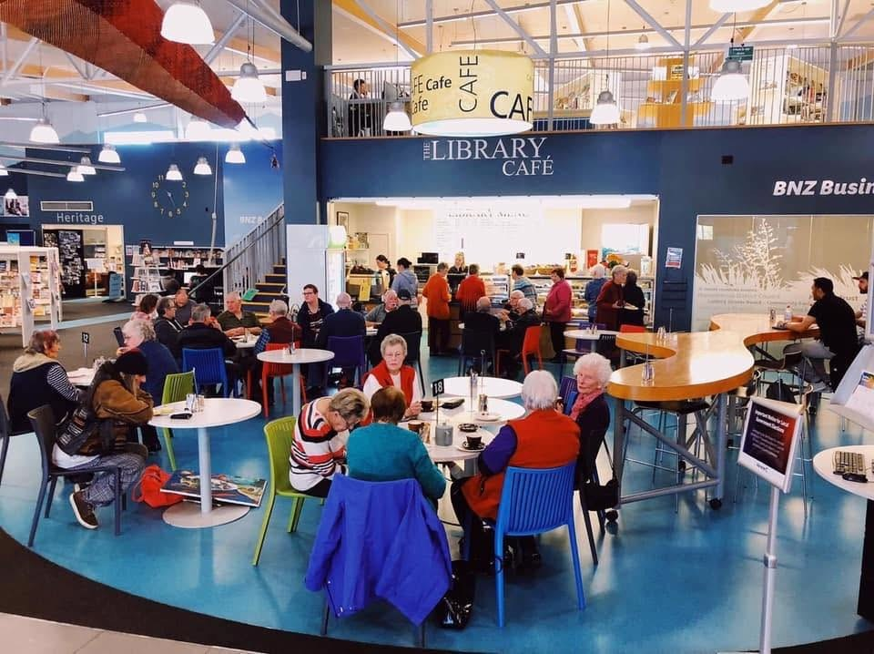

Back to The Library Café
Gallery
From our business

From our Facebook page
From our Facebook page
Illustrative photograph
Explore the gallery
Contact the business to discuss your needs and current availability.